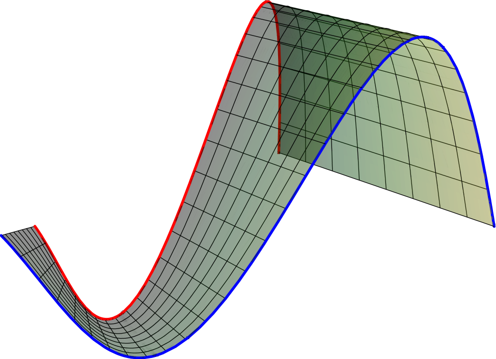

| Instructor: Christopher Stover (webpage) |  |
| Email: cstover (at) math (dot) fsu (dot) edu | |
| Office: MCH 402F | |
| Office Hours: WF 12:00pm to 1:30pm or by appointment | |
| Meeting Location: 102 LOV | |
| Meeting Times: | |
| Mondays ‐ 5:30pm to 6:05pm | |
| Tuesdays & Thursdays ‐ 5:30pm to 6:15pm | |
| Final Exam: | |
| Thursday, December 15, 5:30pm to 7:30pm | |
| Syllabus: .pdf | |
| Required Text: | |
| Calculus: Early Transcendentals, 7th Edition, by James Stewart. (Amazon) | |
Supplementary Resources:
|
| Below is a calendar highlighting the important dates for our class this semester. To access it from a web browser and/or to import it into your personal apps, use the HTML and/or iCal link(s): HTML Link – iCal Link |
| Homework 1: Handout |
| Homework 2: Handout |
| Homework 3: Handout Solutions |
| Homework 4: Handout Solutions: 1 2 3 4 5 6
Corrections: 3(d): Increasing: $(\pi/2,\pi)\cup(3\pi/2,2\pi)$; Decreasing: $(0,\pi/2)\cup(\pi,3\pi/2)$; 3(e): $\frac{d^2y}{dx^2}=\csc^3(t)$. |
| Homework 5: Handout Solutions
Corrections: 4(h): This limit does not exist. I'd wanted to ask about the limit without the $(-1)^n$ term there, in which case the sequence converges to $1/3$ (prove it!). 8(c): $s_2=\frac{1}{4}; s_4=\frac{1}{3}; s_6=\frac{3}{8}$ 8(d): $s_2=\frac{154}{9}; s_4=\frac{20020}{81}; s_6=\frac{2434894}{729}$ |
| Homework 6: Handout Solutions |
| Formula Sheet: .pdf |
| Power series example: .pdf
Note: This note works (in detail) the interval and radius of convergence for the power series $\sum_{n=0}^\infty\frac{x^n}{n\left(\ln(n)\right)^{1/2}}$. |
| Various Laws/Theorems/Rules About Sequences: .pdf |
| Series Tests: .pdf |
| How to Determine Series Convergence (Step-By-Step): .pdf short A4-version |
| Parametric Curves You Should Know: .pdf |
| Curves You Should Know: .pdf |
| Polar Regions Related to HW4 #13(a): .pdf (see also) |
| Integrals & Integration Techniques You Should Know: .pdf |
| Trig Integrals: .pdf |
| Trig Substitution: .pdf |
| Sample Questions for Approximate Integration: .pdf |
| Exam 1: .pdf Solutions |
| Exam 2: .pdf Solutions |
| Exam 3: .pdf Solutions |
| Exam 4: .pdf Solutions |
| First-Day Handout: .pdf |
| My Schedule: .pdf |
| Section 11.2: Notes
Addendum: $\circ$ Geometric series: The indices for geometric series can be written as either $\sum_{n=0}^\infty ar^n$ or as $\sum_{n=1}^\infty ar^{n-1}$. $\circ$ Convergence: Note that convergence is a statement about the eventual behavior of the series. In particular, $\sum_{n=1}^\infty a_n$ converges if and only if $\sum_{n=N}^\infty a_n$ converges for all finite integers $N\geq 1$. This will be important in subsequent sections. |
| Section 11.3: Notes |
| Section 11.4: Notes |
| Section 11.5: Notes |
{kind=link}